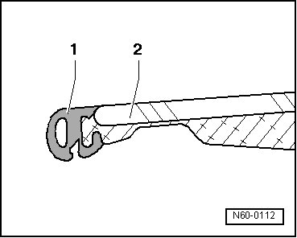

Panel Seal, Replacing
Sunroof with Glass Panel
Panel Seal, Replacing
- Removing glass panel for sunroof, refer to --> [ Sunroof Glass Panel ] Sunroof with Glass Panel
- Remove the seal - 1 - from the glass panel.

- Apply new seal on rear center panel edge, beginning from bottom and moving to top of glass panel - 2 -.
• Coat the edge of the panel with soapy water to make it easier to install the seal.
• If the seal is not correctly installed, the seal surface is wavy.
• Panel seal must be shortened corresponding to the panel circumference.